| Principais habilidades da BNCC | EF06MA17, EF06MA18, EF06MA28, EF06MA32, EF06MA33 |
|---|---|
| Competências | CG3, CG4, CG9, CE2, CE8 |
A geometria sempre foi fonte de inspiração para vários artistas. De acordo com Fainguelernt (2006, p. 18):
A matemática e a arte nunca estiveram em campos antagônicos, pois desde sempre caminharam juntas, aliando razão e sensibilidade. Na verdade, podemos observar a influência mútua de uma sobre a outra desde os primeiros registros históricos que temos de ambas. Essas duas áreas sempre estiveram intimamente ligadas, desde as civilizações mais antigas, e são inúmeros os exemplos de sua interação. Muitos povos utilizaram elementos matemáticos na confecção de suas obras: os egípcios com suas monumentais pirâmides e gigantescas estátuas; os gregos com o famoso Parthernon e com seus belíssimos mosaicos; os romanos com suas inúmeras construções com formas circulares, entre elas o Coliseu.Dessa maneira, iniciamos o estudo da geometria relacionada a algumas manifestações artísticas. A matemática e a arte desenvolvem a imaginação e a intuição, importantes para a construção do conhecimento no educando.
Caso o professor queira, pode explorar outros artistas que também utilizaram a geometria como fonte de inspiração de suas obras. Podemos citar:
EF06MA17
EF06MA18
CAPÍTULO 4 - Geometria: noções iniciais
Arte e geometria
Na primeira década do século XX teve início um movimento denominado Cubismo. Um dos seus principais representantes foi Pablo Picasso (1881- 1973). Observe, a seguir, uma de suas obras.
Pablo Ruiz Picasso nasceu em Málaga, na Espanha. Filho de pais artistas, desde muito cedo mostrou seu talento para as artes. Embora tenha iniciado os seus estudos de Belas Artes na cidade galega, foi em Barcelona, para onde a família se mudou em 1895, que completou sua formação e iniciou sua carreira de pintor.
PICASSO, Pablo. Fábrica de tijolos em Tortosa. 1909. Óleo sobre tela. 50,7 cm x 60,2 cm. Museu Hermitage, São Petesburgo, Rússia

1. Troque ideias com o colega e depois respondam às questões. Resposta pessoal.
a) O que se observa na imagem? A imagem é formada por fi guras geométricas planas.
b) Quais formas geométricas podem ser identificadas? Poliedros.
UNIDADE 1 - CAPÍTULO 4
28
Arte e geometria
As obras apresentadas fazem parte de um movimento artístico denominado cubismo. Sobre este movimento, leia a seguir um trecho do livro Cubismo, de Anne Ganteführer-Trier.
“O que é um cubista? É um pintor da Escola de Braque-Picasso.” Esta declaração foi feita no dia 23 de abril de 1911, no jornal diário Le Petit Parisien, pouco tempo depois do propalado escândalo que a abertura do “Salon das Indépendants” causou, e que teve lugar entre os dias 21 de abril e 13 de junho desse ano. Os cubistas - inclusive Albert Gleizes, Jean Metzinger e Fernand Léger - tinham a sua própria mostra dentro da exposição, em que não estavam representadas obras de Pablo Picasso e de Georges Braque.
As origens da palavra Cubismo remontam aos trabalhos de Henri Matisse (1869-1954), que não pode ser incluído entre os últimos cubistas e ao famoso jornalista francês e crítico da arte Louis Vauxcelles. [...] Segundo Matisse recorda, foi justamente Georges Braque quem criou o primeiro quadro cubista e consequentemente estabeleceu o Cubismo como uma tendência estilística. [...]
Vauxcelles estabelecerá originalmente o termo “Cubismo” numa reportagem feita sobre o “Salon des
28
Mondrian, Escher, Kandinsky, Romero Britto, Sacilotto, entre outros. Pode-se reunir os alunos em grupos e solicitar que cada grupo faça uma pesquisa sobre um determinado artista e que apresentem uma obra, expondo o significado dela. Pode-se realizar um trabalho conjunto com a disciplina de Arte para um aprofundamento sobre o significado das obras apresentadas nesta coleção.
O assunto abordado neste capítulo oportuniza aos alunos ampliar seus conhecimentos sobre as diferentes manifestações artísticas, contemplando, assim, a Competência geral 3 da BNCC.
Outros trabalhos podem ser solicitados. Recomenda-se a leitura e trabalho com os livros:
► FAINGUELERNT, Estela Kaufmann; NUNES, Katia Regina Ashton. Fazendo arte com a Matemática. Porto Alegre: Artmed, 2006.
► ______. Tecendo Matemática com arte. Porto Alegre: Artmed, 2009.
Os cubistas pintavam suas obras combinando formas geométricas. Eles acreditavam que a geometria era a base de qualquer representação.
Influenciado pelo Cubismo e por outros movimentos artísticos, Piet Mondrian criou o movimento chamado Neoplasticismo, no qual era pautado na abstração geométrica e redução da expressão plástica, expressas pela clareza, objetividade e ordem.
Pieter Cornelis Mondrian, geralmente conhecido por Piet Mondrian, nasceu em Amersfoort, em 7 de março de 1872 e faleceu em Nova Iorque, em 1 de fevereiro de 1944. Foi um pintor neerlandês modernista que criou o movimento artístico Neoplasticismo. Colaborou com a revista De Stijl e depois com as formas da pintura concreta.
2. Troque ideias com seus colegas e depois respondam às questões.
a) O que se observa na imagem? A imagem é formada por fi guras geométricas planas.
b) Qual figura geométrica predomina na obra? Quadriláteros.
Como você observou, a geometria serviu como inspiração para vários artistas. Matemática e Arte sempre caminharam juntas. O diálogo entre elas favorece o desenvolvimento crítico, a autonomia intelectual, a sensibilidade e a criatividade.
UNIDADE 1 - CAPÍTULO 4
29
Indépendants” em 1909. Desde então as pinturas mais recentes de Pablo Picasso e Georges Braque seriam designadas pelo estilo recentemente criado, sem que qualquer destes artistas tivesse contribuído para a criação do termo. Conforme Picasso recordou mais tarde: “A forma como desenvolvemos o Cubismo não foi intencional, até certo ponto só pretendíamos exprimir o que tínhamos dentro de nós. Ninguém nos impôs um programa, e os nossos amigos, os poetas, seguiram atentamente os nossos esforços sem nunca nos imporem o que quer que fosse.” Algures Picasso disse: “O Cubismo tem objetivos palpáveis. Nós vemo-lo apenas como um meio de expressão para o que compreendemos com a vista e com o espírito, ao mesmo tempo em que tiramos partido de todas as possibilidades que nos facultam as qualidades inerentes ao desenho e à cor. Assim se tornou numa fonte inesperada de regozijo para nós, num manancial de descobertas”.
Não nos podíamos referir, nem nessa época nem posteriormente, a uma “escola” de Picasso ou de Braque. Até ao final da época cubista, prevaleceu a dificuldade de associar a uma escola ou programa claramente definidos.
29
Figuras geométricas planas e não planas
Professor, é importante que os alunos percebam que as formas planas apresentam somente duas dimensões, enquanto que as formas não planas apresentam três dimensões. Para ajudar na compreensão, você poderá solicitar com antecedência que os alunos tragam para sala de aula várias embalagens nas quais poderão ser identificadas as três dimensões. Posteriormente, pode-se desmontar as embalagens e solicitar que eles façam o desenho do contorno em uma folha de papel para mostrar as formas planas, que apresentam duas dimensões.
EF06MA17
EF06MA18
Figuras geométricas planas e não planas
A seguir, há duas obras de artistas distintos que utilizaram a geometria como fonte de inspiração.
![Obra de arte “Suprematismo” de Malevich. Sobre fundo branco, uma grande figura geométrica de linhas retas na cor preta. Sobre ela outras figuras geométricas, também de linhas retas, nas cores amarela, azul verde e vermelha. Abaixo uma figura geométrica vermelha composta de quatro linhas, duas verticais e duas horizontais no mesmo tamanho por cima de outras figuras nas cores amarela e preta, essas com linhas verticais retas e tamanhos diferentes na vertical e horizontal. No canto da obra, mais figuras geométricas de linhas retas desiguais nas cores verde e azul.](../../resources/images/000063.png)
UNIDADE 1 - CAPÍTULO 4
30
30
Poliedros e não poliedros
Professor, para iniciar o estudo dos poliedros e corpos redondos, pode-se aproveitar embalagens que tenham sido coletadas anteriormente para explorar determinadas propriedades. No caderno, os alunos podem anotar o que eles percebem de comum e de diferente entre as embalagens, por exemplo: o formato das faces, se possuem superfícies arredondadas ou não, etc. Após essas observações, sugere-se que eles tentem classificar quais julgam que são poliedros e quais eles acreditam que são corpos redondos, explicando como chegaram a tais conclusões.
EF06MA17
No nosso dia a dia, podemos reconhecer formas que lembram figuras geométricas. As figuras geométricas planas possuem comprimento e largura, por isso também são conhecidas por figuras bidimensionais. Já as figuras geométricas não planas possuem comprimento, largura e altura, por isso são chamadas de figuras tridimensionais ou sólidos geométricos.
Observe alguns exemplos:
Poliedros e não poliedros
Observe os sólidos geométricos a seguir.
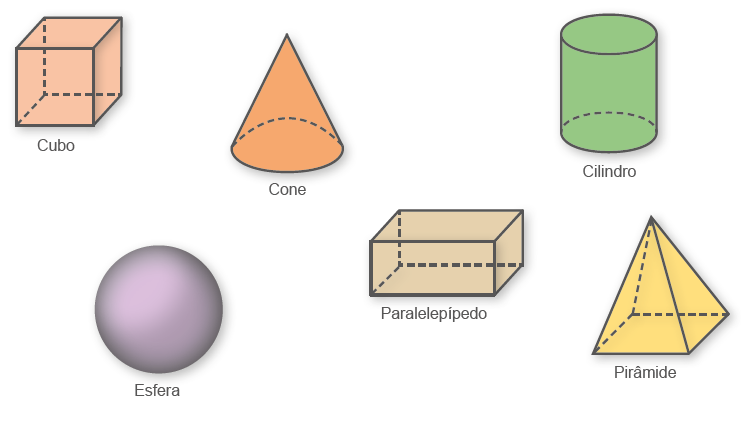31
Poliedros e não poliedros
A história da Matemática nos traz informações sobre a geometria dos sólidos, esta que se tornou necessária quando os seres humanos começaram a desenvolver as suas moradias. Vejamos o que Rooney nos relata em seu livro, A história da Matemática: desde a criação das pirâmides até a exploração do infinito, (2012, p. 104-105):
Formas básicas
Platão identificou cinco sólidos poliédricos com todas as faces iguais. Ele associou esses sólidos com os elementos básicos que ele acreditava que formavam o mundo físico. Esses sólidos platônicos são a pirâmide triangular (tetraedro), o cubo (hexaedro), o octaedro, o dodecaedro e o icosaedro. Platão achava que a terra era feita de partículas cúbicas, o fogo pelas pirâmides, o ar pelos octaedros e a água pelos icosaedros. Ele dizia, “... deus usou [o dodecaedro} para organizar as constelações em todo céu”. Em Elementos, Euclides dá um completo relato dos sólidos platônicos e repete a afirmação de Platão de que há apenas cinco sólidos regulares.
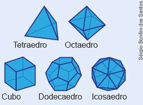O astrônomo alemão Johannes Kepler (1571 – 1630) tentou associar os sólidos platônicos com os planetas conhecidos e formou um modelo do sistema solar no qual os sólidos eram aninhados uns dentro dos outros. Embora ele tivesse de desistir do modelo, ele descobriu, no processo de trabalhar com ele, dois poliedros estrelares regulares em 1619. Eles são formados estendendo-se as arestas, ou faces, do poliedro até que elas se encontrem, formando novas
EF06MA17
Note que alguns sólidos geométricos apresentam apenas figuras planas nas suas superfícies e são chamados de poliedros. Enquanto outros apresentam uma superfície curva, são chamados de não poliedros ou corpos redondos. Veja alguns exemplos: Poliedros: cubo, pirâmide e paralelepípedo (bloco retangular).
Corpos redondos: cone, cilindro e esfera.
No bloco retangular tem-se 6 faces.
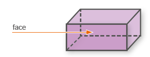O encontro de duas faces recebe um nome especial. É chamada de aresta. E o encontro das arestas é chamado de vértice.
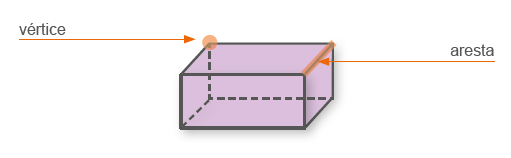Em qualquer poliedro podemos encontrar faces, vértices e arestas. Alguns poliedros recebem nomes especiais de acordo com o número de faces, observe:
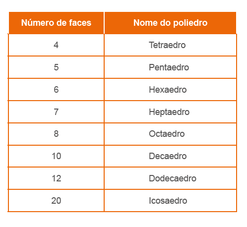UNIDADE 1 - CAPÍTULO 4
32
32
formas. Louis Poinsot descobriu mais dois em 1809. Em 1812, Augustin Cauchy provou que não havia mais poliedros estrelares regulares.
Poliedros de Kepler-Poinsot
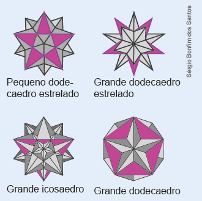Embora se atribua a Platão a primeira descrição dos sólidos platônicos, eles estão todos representados em esferas de pedra entalhada com 4 000 anos de idade encontradas na Escócia. Pelo menos um dos poliedros de Kepler era conhecido antes que ele escrevesse sobre ele. Um polígono estrelado está desenhado no piso de mármore da Basílica de São Marcos em Veneza, Itália, e data do século 15.
Prismas e pirâmides
Alguns poliedros recebem nomes especiais. Os poliedros abaixo são chamados de prismas.
Nos prismas acima, as faces coloridas são chamadas de bases, e as demais, de faces laterais. Em um prisma, as faces laterais são sempre paralelogramos.
Observe, agora, os poliedros que são chamados de pirâmides.
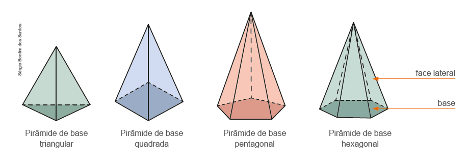Nas pirâmides, as faces laterais são sempre triangulares, já as bases podem assumir formas variadas.
UNIDADE 1 - CAPÍ TULO 4
33
Sugestão de atividade
Os sólidos de Platão podem ser construídos por meio de dobraduras. Solicite aos alunos que façam uma pesquisa e verifiquem como construir estes sólidos utilizando esse processo.
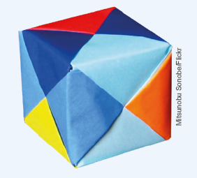33
Vistas
Professor, na geometria há um raciocínio espacial ou senso espacial, que se refere ao modo como pensamos e raciocinamos sobre formas e espaços. É importante, portanto, saber como nossos alunos pensam sobre isso.
De acordo com Walle (2009), o senso espacial pode ser definido como uma intuição ou uma sensibilidade sobre formas e as relações entre elas. Indivíduos com senso espacial possuem um “tato” para os aspectos geométricos de sua vizinhança e as formas criadas pelos objetos em seu ambiente. O senso espacial inclui a habilidade para visualizar mentalmente objetos e relações espaciais - para girar e virar as coisas em sua mente. Pessoas com senso espacial apreciam formas geométricas na arte, na natureza e na arquitetura. Elas são capazes de usar ideias geométricas para descrever e analisar o mundo em que vivem.
Tem-se no senso comum que uma pessoa nasce ou não com senso espacial. Isso não é verdade. A partir de experiências que são apresentadas aos alunos com formas e relações espaciais, ao longo do tempo, eles podem desenvolver o senso espacial.
Para auxiliar esse desenvolvimento, instigamos os alunos a perceber e enxergar determinados sólidos geométricos com vistas frontais, superiores e laterais. Isso possibilita que eles criem em suas mentes novas imagens de acordo com a posição em que se encontram.
EF06MA28
Vistas
Marcela está brincando com alguns cubinhos com o objetivo de formar sólidos geométricos variados. Ao formar um sólido geométrico, ela percebeu que, conforme a posição em que observa, a vista que tem do objeto é diferente.
Nesse momento, Marcela está de frente para o sólido geométrico. Logo sua vista é frontal. Vamos representá-la em um quadriculado.
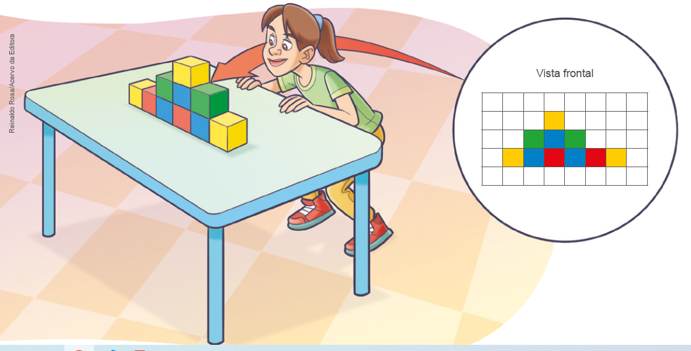Caso Marcela ande para o lado esquerdo da mesa, ela terá uma nova visão do sólido geométrico, que denominamos de vista lateral esquerda, observe:
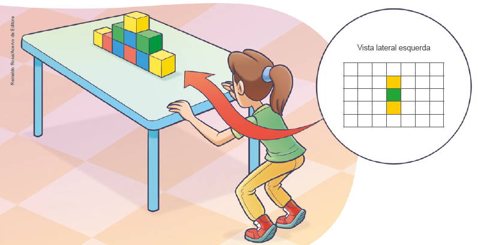34
UNIDADE 1 - CAPÍTULO 4
34
Além das atividades apresentadas no livro didático, você pode propor outras situações nas quais eles precisem representar as vistas. Para iniciar o desenvolvimento desse tema, podem-se escolher alguns objetos disponíveis na escola e solicitar que os alunos desenhem, no caderno, como enxergam o objeto de acordo com várias posições. A seguir, em grupos, eles poderão confeccionar vários cubos coloridos e montar sólidos geométricos fazendo, posteriormente, a representação das vistas que forem solicitadas.
Nem todos pensam e enxergam as coisas da mesma maneira, pois somos pessoas diferentes. Porém todos são capazes de crescer e desenvolver a habilidade de pensar e raciocinar em contextos geométricos.
Como fechamento do trabalho com vistas, pode-se utilizar um mapa da região em que moram e solicitar aos alunos que tracem uma rota de deslocamento. Esse trabalho pode ser desenvolvido em conjunto com a Geografia. Eles podem, por exemplo, traçar a rota, utilizando como ponto de partida o endereço da escola até um monumento ou ponto importante da cidade. Dessa forma, eles terão uma vista superior da região onde vivem, além de aprenderem na prática como traçar uma rota ao destino que se deseja chegar.
EF06MA28
Além dessas, Marcela ainda pode ter uma vista superior e uma vista lateral direita. Observe como ficariam estas representações do ponto de vista dela:
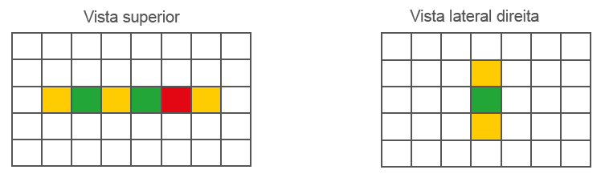Note que na vista superior, Marcela não consegue ver o cubinho azul e que a visão lateral esquerda é igual a da lateral direita.
Essa forma de representação pode ser bastante útil em nosso cotidiano.
Muitas vezes, precisamos representar de forma bidimensional o que estamos vendo. Observe o exemplo a seguir, em que temos uma vista superior de algumas ruas do plano piloto em Brasília.
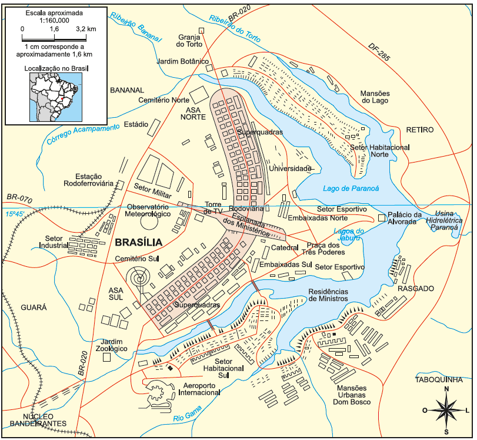GIRARDI, Gisele; ROSA, Jussara Vaz. Novo atlas geográfico do estudante. São Paulo: FTD, 2005.
Podemos consultar um mapa para identificar o local em que estamos e nos orientarmos em como chegar ao destino desejado.
UNIDADE 1 - CAPÍTULO 4
35
35
Encontre soluções
Na atividade 2, proponha aos alunos que construam os poliedros indicados para que possam identificar o número de vértices, faces e arestas. A seguir, disponibilizamos as formas planificadas destes poliedros para que possam ser ampliadas e reproduzidas.
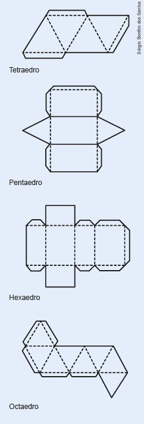EF06MA17
ENCONTRE SOLUÇÕES
1. No caderno, identifique, nos sólidos geométricos a seguir, quais são polie-Essa relação entre a quantidade de dros e quais são corpos redondos. Corpos redondos: A, D, E, G, e J. Poliedros: B, C, F, H, I, K.
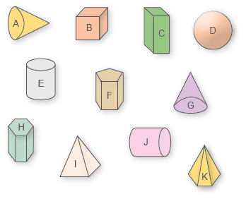2. Em seu caderno, copie e complete o quadro a seguir.
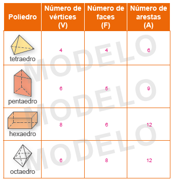Agora, calcule para cada poliedro, o valor da expressão V + F – A, sendo V a quantidade de vértices, F a quantidade de faces e A a quantidade de arestas. O que você observou? Em todos os casos, o valor da expressão é igual a 2.
Essa relação entre a quantidade de vértices, faces e arestas de alguns poliedros foi descoberta no século XVIII, por um matemático suíço chamado Leonhard Euler (1707-1783). Por isso, ela é denominada de Relação de Euler.
3. Observe os prismas abaixo.
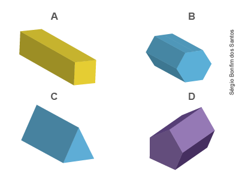a) Em seu caderno, copie e complete o quadro conforme o modelo a seguir.
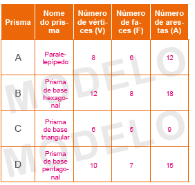b) Verifique se a Relação de Euler é válida para os prismas representados. Sim, é válida.
36
Encontre soluções
Atividade 5
Professor, apresente aos alunos uma breve biografia de Victor Vasarely.
O pintor nasceu em 9 de abril de 1908 em Pécs, na Hungria, e estudou Arte em Budapeste. Depois de um período de expressão figurativa, optou por uma arte construtivista e geométrica. Os seus trabalhos são, então, essencialmente geométricos, policromáticos, multidimensionais, totalmente abstratos e intimamente ligados às ciências. A sua maior contribuição foi a construção de uma linguagem que incorpora a geometria, a física, os avanços tecnológicos, a química e os elementos plásticos na articulação de novas fontes poéticas. Com isso, o artista objetivou democratizar e socializar o usufruto das artes, atingindo um público amplo.
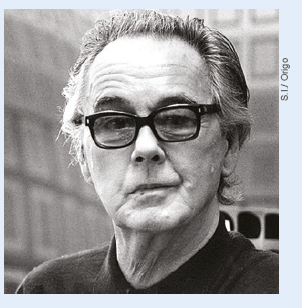EF06MA17
4. A seguir, temos representadas algumas pirâmides.
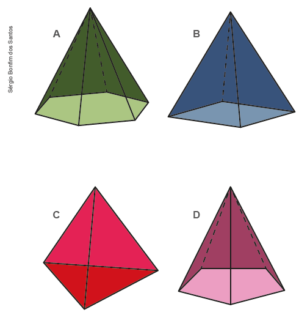a) Em seu caderno, copie e complete o quadro conforme o modelo abaixo.
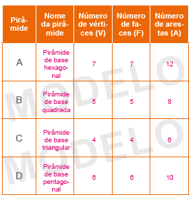b) O que você observa entre o número de vértices e faces em uma pirâmide? Elas são iguais entre si.
c) Verifique se a Relação de Euler é válida para as pirâmides representadas. Sim, é válida.
d) A Relação de Euler vale para todos os sólidos geométricos? A Relação de Euler é válida para todos os poliedros.
5. Observe a obra de arte a seguir.
![Obra de arte de Victor Vasarely, intitulada VY-29F. Ela é formada por seis cubos com as faces coloridas. São três cubos de cada lado, em linha horizontal. O primeiro cubo tem as faces vermelha e verde. À frente dele, um quadrado azul. O segundo, abaixo, é um cubo com faces azul clara e verde. À frente dele, um quadrado rosa. Mais abaixo, o cubo tem as faces verde, laranja e azul marinho. À frente dele, um quadrado bordô. Do lado direito, o primeiro tem as faces azul clara e azul escura e laranja. À frente dele, um círculo azul. O segundo cubo, abaixo, tem as faces em tons de azul. À frente dele, um círculo também na cor azul, em tom mais escuro que as faces. Mais abaixo, o cubo tem as faces rosa, vermelho e azul. À frente dele, um círculo verde.](../../resources/images/q5c4.PNG)
UNIDADE 1 - CAPÍTULO 4
37
a) Ao observar a obra a seguir, de Victor Vasarely, como você descreveria a sua composição?
b) Que tipo de poliedros estão representados nessa obra de arte? Prismas. A Relação de Euler é válida para todos os poliedros. Os alunos podem ter várias interpretações, destacando, em suas descrições, os cubos coloridos, as faces que apresentam quadrados e círculos
6. Agora você é o artista. Pegue uma folha A4 e componha uma obra usando as formas geométricas que você estudou. Pinte-a com cores diferenciadas e apresente para sua turma. Descreva em seu caderno quais as formas geométricas que você usou para compô-la. Criação pessoal.
37
EF06MA17
7. A seguir, há algumas construções que apresentam o formato de sólidos geométricos. Como você as descreveria usando os sólidos geométricos estudados? Resposta pessoal.
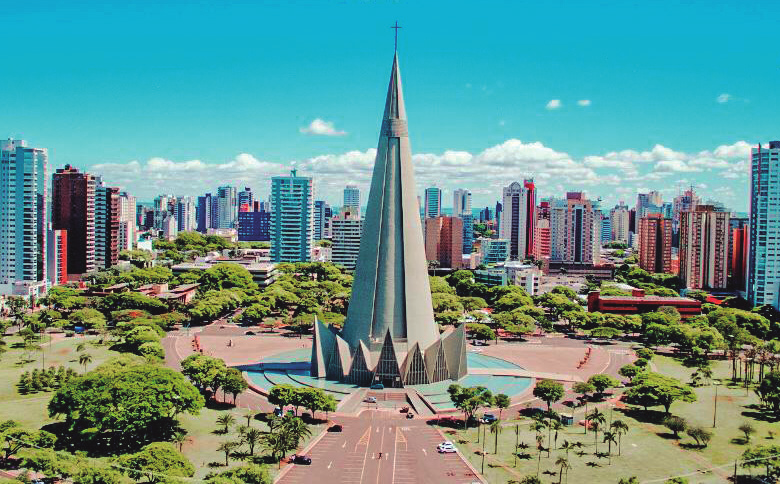 Catedral Basílica Menor Nossa Senhora da Glória: assemelha-se a um cone; 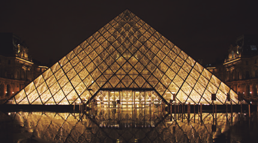 Museu do Louvre: pirâmide 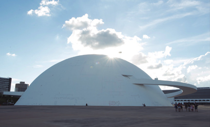 Museu Nacional Honestino Guimarães, cujo formato assemelha-se à metade de uma esfera.8. Os sólidos geométricos a seguir são denominados de Poliedros de Platão. Platão (428-348 a.C.) foi um filósofo grego que estabeleceu relações entre alguns poliedros e a construção do Universo. Para ele, o cubo estava associado ao elemento terra, o icosaedro ao elemento água, o tetraedro ao elemento fogo, o octaedro ao elemento ar e o dodecaedro ao universo.
![Ilustração de cinco poliedros. O primeiro é um cubo. Nas três faces que aparecem a ilustração de uma árvore no quadrado à frente, duas flores na lateral esquerda e na parte de cima uma maçã e uma cenoura. O segundo é um tetraedro. Vê-se, na parte frontal dele, a ilustração de uma fogueira. O terceiro é um octaedro, em que se vê quatro partes, na primeira um pássaro, na segunda e terceira nuvens com sol e na quarta nuvens com chuva. O quarto com desenhos de seres vivos do mar, vê-se dez lados. O quinto e último poliedro, com ilustrações de corpos celestes como o sol, a lua, as estrelas, planeta e o globo terrestre, vê-se seis lados.](../../resources/images/e8c4.PNG)
► De acordo com os poliedros apresentados, copie a tabela em seu caderno e complete-a.
![Tabela com quatro linhas e seis colunas com espaços em branco para preencher. Na primeira linha: Nome do poliedro, número de vértices, número de arestas, número de faces. A segunda linha tem a primeira coluna em branco, o número de vértices 6 e as outras duas colunas em branco. A terceira linha tem espaço em branco nas duas primeiras colunas, na terceira coluna, o número 12 e a última coluna com o espaço em branco. Na quarta linha, a primeira coluna tem a palavra Tetraedro. As três colunas restantes estão em branco. Na quinta coluna, as três primeiras colunas estão em branco. Na última coluna, o número 12. A sexta e última linhas, tem as duas primeiras colunas com o espaço em branco. A terceira coluna tem o número 30 e a última coluna com o espaço em branco.](../../resources/images/professor/19.PNG)
9. Em seu caderno, relacione os sólidos geométricos a seguir com suas respectivas vistas: lateral e superior.
![Exercício para relacionar as vistas lateral e superior numeradas com as letras: a, b, c e d com sólidos geométricos com os números romanos: I, II, III, IV. A letra a tem nas laterais retângulos na vertical e na parte superior um triângulo. A letra b tem nas laterais triângulos e a base é um quadrado. A letra c tem nas laterais retângulos na vertical e na parte superior cinco lados iguais. A letra d tem nas laterais triângulos e a base tem seis lados iguais. Para fazer a relação, os números de I a IV são: I é um retângulo e um pentaedro. II é um retângulo e um triângulo. III é um triângulo e um hexaedro. E IV é um triângulo e um quadrado.](../../resources/images/e9c4.PNG)
(a) (II)
(b) (IV)
(c) (I)
(d) (III)
UNIDADE 1 - CAPÍTULO 4
38
Atividade 10
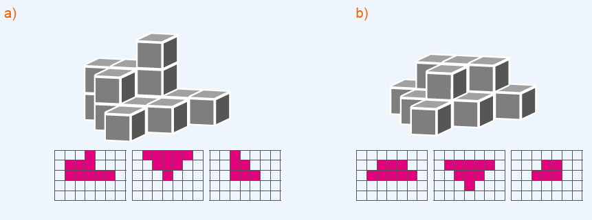38
Atividade 11 – Jogo resta um
O jogo pedagógico é uma forma interessante de propor problemas, porque permite que os alunos desenvolvam sua criatividade, favorecendo a elaboração de estratégias para vencê-lo. Dessa forma, é estimulado o planejamento de ações que possibilitam uma atitude positiva perante o erro, uma vez que as situações ocorrem rapidamente e podem ser corrigidas de maneira natural.
As atividades com jogos permitem a sociabilização entre os alunos, desenvolvem o espírito de equipe, a cooperação, o respeito ao trabalho e às limitações do outro. Ainda permitem o desenvolvimento do senso crítico, do raciocínio, da reflexão e da sua autonomia, o que contribui de forma positiva para a construção da cidadania.
Para o jogo do resta um é necessário que as cartas sejam confeccionadas previamente. Oriente os alunos que elas se encontram nos anexos do livro e deverão ser reproduzidas. Para cada grupo de 4 alunos, é necessário um jogo de 24 cartas.
Ao iniciar o jogo, cada grupo deverá embaralhar suas cartas. Uma ficará fora do monte virada para baixo, pois os jogadores não poderão vê-la. Um deles irá distribuir as outras cartas para os demais. Este ficará com uma carta a menos.
Oriente os alunos para que verifiquem as cartas que têm na mão e se estas são pares (eles deverão baixar esses pares sobre a mesa). Explique que os pares são formados por uma carta com a imagem que representa o sólido geométrico e uma que apresenta algumas características desse sólido.
É importante que os grupos estejam organizados em círculos e que o jogador que distribui as cartas seja identificado como sendo o número 1. O da esquerda será o número 2; na sequência o 3 e o 4.
EF06MA17
EF06MA28
10. Utilizando uma folha quadriculada, desenhe as vistas solicitadas das pilhas formadas por cubinhos. Depois responda: quantos cubinhos formam cada sólido geométrico?
a)
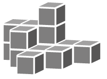
► Vista frontal
► Vista superior
► Vista lateral esquerda
b)
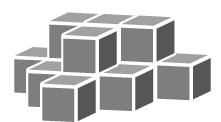
► Vista frontal
► Vista superior
► Vista lateral direita
11. Vamos jogar Resta Um?
Número de participantes: 4 alunos
Como jogar

- Reproduza as cartas que se encontram nos anexos.
- Embaralhe todas elas.
- Retire uma carta sem que se veja qual é. Essa deve ficar voltada para baixo até o final da partida.
- Inicie distribuindo as cartas uma a uma. Deixe você por último.
- Cada jogador deverá olhar suas cartas e verificar se formam pares. Por exemplo: 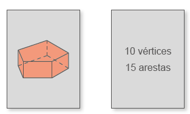
- Os pares formados serão baixados sobre a mesa.
- As cartas que sobrarem na mão não deverão ser vistas pelos demais jogadores.
- Ao distribuir as cartas, você ficou com uma a menos. Agora, retire uma (sem saber qual é) do jogador que está à sua esquerda e tente formar um par com ela.
- Se você fizer um par, baixe-o sobre a mesa. Caso contrário, fique com essa carta.
- Em seguida, o próximo jogador retirará uma das cartas do maço que está com você. Se formar um par, este deve ser colocado sobre a mesa.
- O próximo jogador deverá fazer o mesmo, ou seja, escolher uma carta do maço do colega à sua esquerda.
- A rodada deverá continuar até a partida terminar. Isso ocorrerá quando um jogador ficar com uma carta sem conseguir fazer um par. Ele será o perdedor.
UNIDADE 1 - CAPÍTULO 4
39
Assim, o número 1 (quem inicia o jogo) retira uma carta do número 2 que estará à sua esquerda. Na sequência, o número 3 deverá retirar uma carta do maço do número 2. Continuando a rodada, o número 4 retirará uma carta do maço do aluno que representa o número 3 e o número 1 fará o mesmo com o número 4, e assim sucessivamente até um dos alunos do grupo ficar com apenas uma carta.
39
Atividade 12
Analise quantos cubos foram empilhados em cada posição. Note que o quadrado central da vista de cima da alternativa C, que aponta haver cubos empilhados nesta posição do bloco. Este quadrado está mais fácil de analisar, pois, não possui quadrado acima, abaixo, à direita e à esquerda. Note que há apenas um quadrado no meio da vista de frente, logo, segundo a alternativa C, na posição central do bloco haverá um cubo. Agora, há dois quadrados sendo observados no meio da vista da esquerda, então, segundo a alternativa C, na posição central do bloco haverá dois cubos. Isto é impossível restando apenas a alternativa C.
Atividade 13
Ao montar o cubo, a face totalmente branca e a face totalmente preta ficam em lados opostos, dessa forma podemos excluir a letra A e B. Podemos excluir a letra D, pois não existe uma faixa cinza deitada junto a face toda branca. Por fim podemos excluir a letra E, pois caso a face toda cinza esteja para cima não existirão duas faixas cinzas em pé. Restando apenas a letra C.
EF06MA28
12. (OBMEP) Alguns cubos foram empilhados formando um bloco. As figuras abaixo representam a vista da esquerda e da frente desse bloco. Olhando o bloco de cima, qual das figuras a seguir não pode ser vista?
Caso os alunos tenham difi culdade em visualizar o bloco, poderão utilizar os cubinhos do Material Dourado para montá-lo.
![Sete imagens todas com três colunas formadas com pequenos quadrados brancos. A primeira é a vista da esquerda com seis quadrados empilhados. A primeira tem três quadrados, a segunda dois e a terceira 1. A segunda imagem é a vista da frente. Na primeira coluna tem três quadrados e a segunda e terceira um. Na sequência, as últimas cinco imagens estão numeradas com letras: a, b, c, d, e. A letra a tem na primeira coluna três quadrados, a segunda coluna, dois e a terceira coluna um. A letra b tem três quadrados na primeira coluna, e um quadrado na segunda e terceira colunas. A letra c tem, dois quadrados na primeira coluna, um na linha 1 e o outro na linha 3. Na segunda coluna ele tem apenas um quadrado no centro e a última coluna tem apenas um quadrado na linha 3. A letra d tem, na primeira coluna, dois quadrados na primeira e segunda linhas. A segunda e a terceira coluna tem em cada uma delas um quadrado na linha 3. A última imagem, letra e, tem na primeira coluna dois quadrados, na linha um e dois, na segundo coluna, um quadrado na linha dois e na última coluna, um quadrado na linha três.](../../resources/images/professor/21.PNG)
13. (OBMEP) Para montar um cubo, Guilherme recortou um pedaço de cartolina branca e pintou de cinza algumas partes, como na figura a seguir.
Qual das figuras abaixo representa o cubo construído por Guilherme?
![O pedaço de cartolina de Guilherme tem o formato de uma cruz dividida em três partes. Na parte de cima, o lado esquerdo é branco e o direito é cinza. A região central tem o formato horizontal, dividida em três partes. Na primeira, o lado esquerdo é cinza e o direito é branco. Na segunda, a parte de cima é branca e na debaixo, também. Na terceira parte da cruz, o lado esquerdo é cinza e o direito é branco.
As alternativas são enumeradas nas letras: a, b, c, d, e. Na letra a, a vista frontal é branca, a lateral direita é branca à esquerda e cinza à direita. A vista superior é cinza. Na letra b, a frontal é branca à esquerda e cinza à direita. A lateral direita é cinza na parte de cima e branca na debaixo. A superior é branca e cinza. Na letra c, a frontal é branca à esquerda e cinza à direita. A lateral direita, é cinza em cima e branca embaixo. A superior é branca. Na letra d, a frontal é branca à esquerda e cinza à direita. A lateral direita é cinza em cima e branca embaixo. A superior é branca. Na letra e, a frontal é cinza à esquerda e branca à direita. A lateral direita, o lado esquerdo é branco e o direito é cinza. A superior é cinza.](../../resources/images/pg40.PNG)
Ao montar o cubo, as faces branca e cinza fi cam opostas, excluindo assim as alternativas (a) e (b). As alternativas (d) e (e) são excluídas porque possuem os lados menores em comum, o que não ocorre quando o cubo é montado. Logo a alternativa correta é a (c).
40
UNIDADE 1 - CAPÍTULO 4
40
Atividade 14
Note que as figuras I e III representam o mesmo objeto em posições diferentes, mas não representam o objeto dado (este é o espelhamento do objeto dado em relação à coluna de dois cubinhos). A figura II representa o objeto dado visto por trás. Já a figura IV também representa o objeto dado, após duas rotações consecutivas. Portanto, a alternativa correta é a C.
Atividade 15
Observando a cena de cima, o cubo menor e os dois cubos empilhados estão em cantos opostos e em diferentes linhas. Portanto, eliminamos as possibilidades A e D, além disso, no sentido horário, estão posicionados: a pirâmide, o cubo, o cilindro e os dois cubos empilhados. A única alternativa, entre as opções B, C e E, em que podemos encontrar esta ordenação no sentido horário é a alternativa E.
EF06MA28
14. (OBM) Observe a figura:
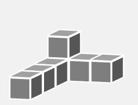► Duas das figuras abaixo representam o objeto acima colocado em outras posições. Quais são elas? Caso os alunos tenham difi culdade em visualizar o bloco, poderão utilizar os cubinhos do Material Dourado para montá-lo.
I)
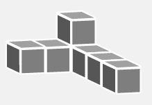II)
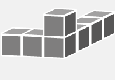III)
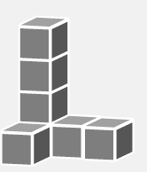VI)
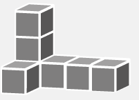a) I e II
b) I e IV
c) X II e IV
d) I e III
e) II e III
15. (OBM) Sobre uma mesa retangular de uma sala foram colocados quatro sólidos, mostrados no desenho ao lado. Uma câmera no teto da sala, bem acima da mesa, fotografou o
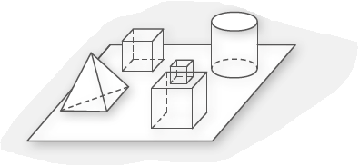a)
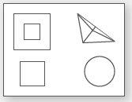b)
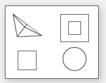c)
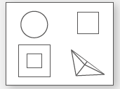d)
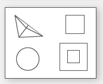e) X
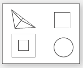UNIDADE 1 - CAPÍTULO 4
41
41
Probabilidade e estatística – Organizar, ler e interpretar dados em tabelas
Atualmente, entender as informações que são vinculadas nos meios de comunicação é muito importante. Essas informações, muitas vezes, vêm acompanhadas de listas, tabelas e gráficos de vários tipos. Por isso, é necessário entendermos o significado desses dados e, ao mesmo tempo, sabermos interpretar os diferentes instrumentos que são usados para representá-los.
Em Matemática, temos um ramo denominado estatística, que trata das formas de coletar, organizar, representar, analisar e interpretar dados de um estudo. Para iniciar os estudos nessa área, apresentamos a construção e interpretação de tabelas de dupla entrada. No decorrer dos anos finais do Ensino Fundamental, estudaremos vários conceitos desse ramo específico da Matemática.
Caso tenha disponibilidade, podemos começar a utilizar softwares de planilha para representar gráficos com as informações que constam nas tabelas. A seguir, vamos orientar como construir um gráfico com as informações que constam na tabela da atividade 1.
Software: Planilha eletrônica - LibreOffice.org (software gratuito).
Assunto: Construção de gráfico de barras.
Objetivos:
► Utilizar a tecnologia como recurso de aprimoramento dos conhecimentos adquiridos em sala de aula.
► Aplicar os recursos de uma planilha eletrônica na construção do gráfico de barras.
► Inserir o aluno no mundo digital, com base em um aprendizado mais duradouro e atualizado em relação aos avanços sociais e tecnológicos.
EF06MA32
EF06MA33
► PROBABILIDADE E ESTATÍSTICA
►
Organizar, ler e interpretar dados em tabelas
Brasileiros têm mais acesso à internet, TV e
smartphone
[…]
Os dados mostram que a utilização da internet em qualquer local cresceu de 75% (2018) para 78% no geral. Em homens, esse dado foi de 74% para 77%, enquanto que as mulheres registraram uma crescente de cerca de quatro pontos percentuais (indo de 76% para 79%). E engana-se quem pensa que apenas os jovens se conectaram mais em 2019. Houve sim crescimento de conexão na faixa etária entre 20 e 24 anos – de 91% para 93%, mas a elevação maior da taxa se deu entre a população com 60 anos ou mais, indo de 39% para 45%.
[...]
utilizaram a internet no período de referência são: 2016 (65%); 2017 (70%); 2018 (75%) e 2019 (78%). Enquanto isso, o uso de computadores caiu de 51% para 46% e o de tablet, de 12% para 11%.
MAYARA Jéssica. Brasileiros têm mais acesso à internet, TV e smartphone. Estado de Minas, abril de 2021.
Disponível em:
brasileiros-tem-mais-acesso-a-internet-tv-e-smartphone-confira.shtml. Acesso em: 10 mar. 2022.
(Adaptado).
1. Em seus cadernos, copiem e completem a tabela a seguir com o percentual de usuários de internet no Brasil por gênero, de acordo com o texto.
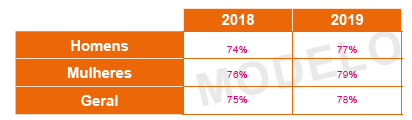2. Em seus cadernos, copiem e completem a tabela a seguir com o percentual de usuários de internet no Brasil por idade, de acordo com o texto.
3. Dentre as duas tabelas, que informação apresentou maior variação nos dois anos? O dado que teve maior variação foi o percentual de usuário de internet com mais de 60 anos, 6% de aumento de 2018 para 2019.
UNIDADE 1 - CAPÍTULO 4
42
42
Como usar o software
1. Acesse o programa LibreOffice. org Calc.
2. Digite as informações da tabela nas células da planilha.
3. Clique com o mouse na célula A1 e arraste até a célula C4 para selecionar toda a tabela.
4. Em seguida, clique no botão para abrir a janela “Assistente de gráfico”. O gráfico de barras se formará automaticamente.
5. No campo “Título”, digite o nome do gráfico.
6. Clique em “Concluir” para finalizar. Use o mouse para mover o gráfico e alterar o seu tamanho.
Objetivos:
EF06MA32
Note que muitas informações podem ser representadas por meio de tabelas, para que a leitura e interpretação dos dados se tornem mais fáceis.
As tabelas utilizadas para representar as informações recebem o nome de tabela de dupla entrada. Nesse caso, um dos dados se refere tanto à linha quanto à coluna na qual se encontra.
4. Maurício mora em Brasília e está escolhendo uma cidade para passar as suas férias. Ele pretende viajar no máximo 1 500 km de carro entre a ida e a volta. Veja na tabela as distâncias, em quilômetros, entre algumas cidades.
![Tabela com seis linhas e seis colunas. Primeira linha com primeira coluna em branco. Primeira linha, da segunda à quinta coluna: Goiânia, Brasília, Palmas, Vitória e Belo Horizonte. A segunda linha é Goiânia com as respectivas distâncias das cidades da primeira linha. A relação de Goiânia com Goiânia é representada por um quadrado (ou seja, zero de distância). As distâncias de Goiânia com Brasília, 209; com Palmas, 823; com Vitória, 1.402; com Belo Horizonte, 886. A terceira linha é de Brasília. Em relação à Goiânia, 209; Brasília, quadrado; Palmas, 808; Vitória, 1.251; e com Belo Horizonte, 735. A quarta linha é de Palmas. Em relação à Goiânia, 823; Brasília, 808; Palmas, quadrado; Vitória, 2.000; e Belo Horizonte, 1.523. A quinta linha é de Vitória. Em relação à Goiânia, 1.402; Brasília, 1.251; Palmas, 2.000; Vitória, quadrado; e Belo Horizonte, 524. A sexta linha é de Belo Horizonte. Em relação à Goiânia, 886; Brasília, 735; Palmas, 1.523; Vitória, 524; e Belo Horizonte, quadrado.](../../resources/images/45tb.PNG)
Fonte: http://distanciacidades.com. Acesso em: 3 mar. 2022.
a) Quais cidades Maurício poderia escolher para passar suas férias? Goiânia e Belo Horizonte.
b) De acordo com as distâncias que aparecem na tabela, quais são as cidades mais distantes entre si? Palmas e Vitória.
c) E as cidades mais próximas? Brasília e Goiânia.
5. Faça uma pesquisa com os alunos de sua sala para saber, dentre 4 atividades previamente escolhidas, qual é a mais praticada pelos meninos e pelas meninas. Organizem os dados coletados em uma tabela de dupla entrada como a do modelo a seguir.
UNIDADE 1 - CAPÍTULO 4
43
43
Relembre
Esta seção finaliza a unidade. Você poderá verificar, através de atividades, se os conceitos estudados na unidade foram assimilados.
Os alunos podem ser organizados em duplas para trocarem ideias, hipóteses, conhecimentos e possíveis dúvidas nas atividades. Depois, permita que compartilhem suas ideias e expliquem como pensaram durante o processo de resolução de cada atividade.
Você pode selecionar as atividades e também propor outras em sala de aula ou como lição para casa de acordo o desenvolvimento da turma. Porém, sempre que possível, faça as correções coletivamente em sala de aula para que os alunos compartilhem estratégias e sejam levantadas possíveis dificuldades.
EF06MA01
EF06MA02
EF06MA17
EF06MA28
Relembre
1. No caderno, escreva dois números naturais consecutivos que somados são iguais a 125. 62 e 63.
2. Com os algarismos 3, 5, 7 e 9, qual o maior número de 3 algarismos diferentes que podemos escrever? E o menor? Maior: 975; Menor: 357.
3. Júlia colocou um anúncio no jornal para vender um terreno por 37 mil reais. No caderno, escreva com algarismos o valor desse terreno. 37 000 reais.
4. No nosso sistema de numeração, um número tem 4 classes e 10 ordens. Quantos algarismos tem esse número? 10 algarismos.
5. Marcos escreveu todos os números naturais de 3 algarismos.
a) Qual é o menor desses números? 100
b) Qual é o maior desses números? 999
c) Quantos números são pares? 450
d) Quantos são ímpares? 450
6. Mariana escreveu os números naturais de 100 a 200. Quantas vezes ela escreveu o algarismo 5? 20 vezes.
7. Leia o texto a seguir.
A lâmpada foi inventada por Thomas Alva Edison em 1879. Ele fez experimentos durante 14 meses para descobrir um fio que ficasse incandescente com a passagem da corrente elétrica. A primeira lâmpada foi feita com filamento de carbono e ficou acesa durante 40 horas seguidas.
► Escreva os números que aparecem no texto com símbolos romanos. 1879 = MDCCCLXXIX; 14 = XIV; 40 = XL.
8. Observe as imagens a seguir e, no caderno, relacione-as com suas formas planas que representam a vista superior de cada uma delas.
UNIDADE 1 - CAPÍTULO 4
44
44
EF06MA17
9. No caderno, classifique os sólidos geométricos a seguir em poliedros ou corpos redondos. Poliedros: 1, 2, 3, 4, 6, 7, 9, 10, 11. Corpos redondos: 5, 8, 12.
![12 figuras. A número 1, a vista superior e a base é um triângulo e a frontal é um retângulo na vertical. A 2, a base é um hexágono e na parte superior os vértices se encontram. A 3 tem a base e a vista superior um retângulo na horizontal. A 4 tem a base um quadrado e as laterais são triangulares. A 5 tem o formato de um cone. A 6 tem todas as laterais quadradas. A 8 tem p formato de um cilindro. A 9 tem a base de um pentágono e na parte superior os vértices se encontram. A 10 tem na base e na vista superior hexágonos e as laterais são retângulos na vertical. A 11 é uma pirâmide com a base triangular e na parte superior os vértices se encontram. A 12 tem a forma de uma bola.](../../resources/images/figs.PNG)
10. No caderno, complete a tabela com as informações que faltam.
![A tabela tem quatro colunas e cinco linhas. Primeira linha: Sólido, Faces, Vértices e Arestas. Segunda linha, figura geométrica com a parte superior e a base no formato de um triângulo. As laterais são retângulas nas verticais. Na segunda linha com a segunda coluna, o número 5. Nesta mesma linha, a terceira e a quarta coluna estão em branco. Terceira linha: figura geométrica no formato de uma pirâmide. A base é um hexágono, as laterais são formadas por triângulos. As colunas desta linha estão em branco. Quarta linha, a figura geométrica tem a base e a vista superior a forma de um pentágono. As laterais são retângulas na vertical. As segundas e terceiras colunas estão em branco e, na quarta coluna, o número 15. Quinta linha, figura geométrica, com a base retangular e as laterais são triangulares. Na segunda coluna, o número 5, e as outras colunas estão em branco.](../../resources/images/professor/30.PNG)
11. (Saresp) Indique a alternativa em que os dois sólidos geométricos apresentados só têm superfícies planas.
a) X
b)
c)
d)
45